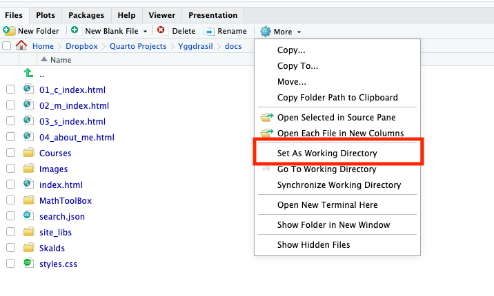

2.4.3 Data Frame
As a programming language originally designed for statisticians, importing data and setting a specific structure for it is essential. It is so called data frame. In R, we can use various functions to read in different types of data, such as txt, csv, xlsx, and more. For example, you can apply read.table function to import data saved in a txt file. You can download Boston data here.
# Prepare a txt file, 'Boston.txt', in a director
setwd("dir containing your data")
# we set the dir containg your data as the working director.
dat = read.table("Boston.txt", sep=",", header = T)Remark: Setting working director (WD) is always useful since it can simplify many things, for example, if we don’t set the WD as the folder containing ‘Boston.txt’, then you have to specify the dir in the first argument of the read.table function. Setting a WD can be done by function setwd, and for checking the current WD, you can use function getwd. In Rstudio, this action also can be done using mouse actions, see figure below.

Data frame is a fundamental data structure used for storing tabular data, where each column can hold different types of data (e.g., numeric, character, or factor). Data frame can be created by function data.frame. For example:
(X = cbind(x1,x2))
(dat = data.frame(x1,x2))
class(X)
class(dat) # it seems there is no difference between a matrix and a dataframe
X%*%t(X) # try this
dat%*%t(dat) # try this -> matrix multiplication is not allowed.So, usually, the operations and functions for a matrix are not allowed to apply to a data frame. Including different types of data is the main difference between data frame and matrix. For example:
# with the same demo data above
x3 = letters[1:3] # define another variable
X = cbind(x1, x2, x3)
dat = data.frame(x1, x2, x3)
X
dat # compare `X` and `dat`, draw yoru conclusions.For a data frame, we still can use the same method as for matrix to slice. Another more practical way is using $ to slice. For examples:
# with the same example above
dat[,3]
dat$x3Some useful functions for data frames
headandtailfunctions: they can help us to check the first and last few lines respectively. For examples:
dat = iris # iris is a pre-stored data set in R which includes 150 iris flowers
head(dat)
tail(dat)
head(dat, 10)namesfunction: it can help us quickly check the names of all variables.attachanddetachfunctions: people feel very inconvenient to use$to slice a data frame, but want to use the variable names directly. In this case, ´attach´ function can help us go into such kind of mode, and apparentlydetachfunction can cease this mode. For examples:
dat = iris
names(iris) # [1] "Sepal.Length" "Sepal.Width" "Petal.Length" "Petal.Width" "Species"
Species # you can't find it
dat$Species # works
attach(dat)
Species # also works
detach(dat)
Species